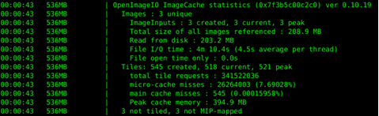
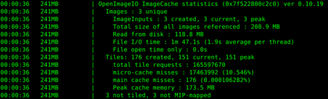
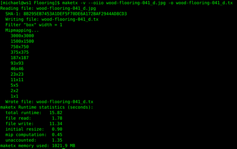
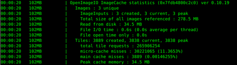

如果您想从这里开始学习本教程，需要在这里下载前一部分的纹理和结果。
现在场景已完成，您可以开始渲染了。
使用了纹理时，日志会显示 OpenImageIO ImageCache 的统计信息。

您的统计信息将与此不同，这取决于您的计算机的性能。记下这些统计信息，以便稍后进行比较。
渲染时间 - 00:00:43
文件 I/O 时间：4 分 10.4 秒
峰值缓存内存：394.9 MB
您会注意到，渲染开始之前存在明显的延迟。这是因为默认启用了“自动 Mipmap”(Auto-mipmap)。当纹理贴图文件未在本地进行 Mipmap 处理时（像我们当前使用的文件一样），启用此选项将会自动生成 Mipmap，该 Mipmap 在渲染期间将存储在内存中。只有最近使用过的分片才会通过默认大小为 1024 MB 的纹理缓存保留在内存中。生成此 Mipmap 会增加渲染时间，对于具有许多高分辨率纹理的场景尤其如此。

现在速度有所加快，但是我们来看看转化纹理将有何影响。
我们将使用 OpenImage IO 的命令行工具 maketx 来转化纹理。
maketx -v --oiio wood-flooring-041_d.jpg -o wood-flooring-041_d.tx
标志 -v 表示详细模式，将输出状态消息。标志 --oiio 将生成为 Arnold 优化的 .tx 文件，它可以通过强制使用对 OpenImageIO 最佳的分片大小 (64x64)，加快渲染速度。此外，它还会交错存储通道 (RGBARGBA...)（从而提高它们的读取速度），并支持恒定颜色检测：当图像是恒定颜色时，会将其转化为一个很小的单色 .tx 文件。-o 必须出现在输出文件之前。

尽管我们可以逐个处理所有图像节点并更新纹理，但是还有一种更快的方法。打开“渲染设置”(Render Settings)窗口，在“纹理”(Textures)下面启用“使用现有 .tx 纹理”(Use Existing .tx Textures)。
尽管着色器中指定的仍是未处理的纹理，但是启用此参数后，Arnold 将搜索文件名相同、但扩展名为 .tx 的文件。
再次渲染，可以明显发现渲染速度加快很多。查看日志中的统计信息。

与原来的渲染相比，现在的渲染时间不到一半。文件 I/O 几乎可以忽略不计，使用的缓存内存也只有之前的 9%。由此可见，在开始时多花点时间转化纹理是值得的，因为这将节省大量的渲染时间。
非常感谢 Arroway Textures 授权我们使用他们的纹理贴图。